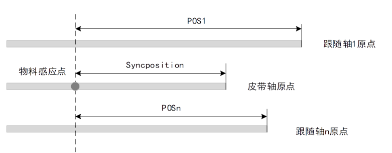
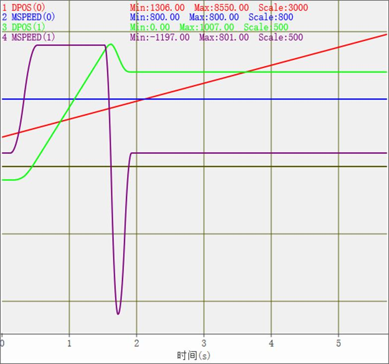
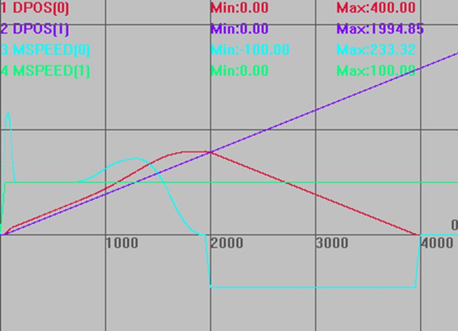
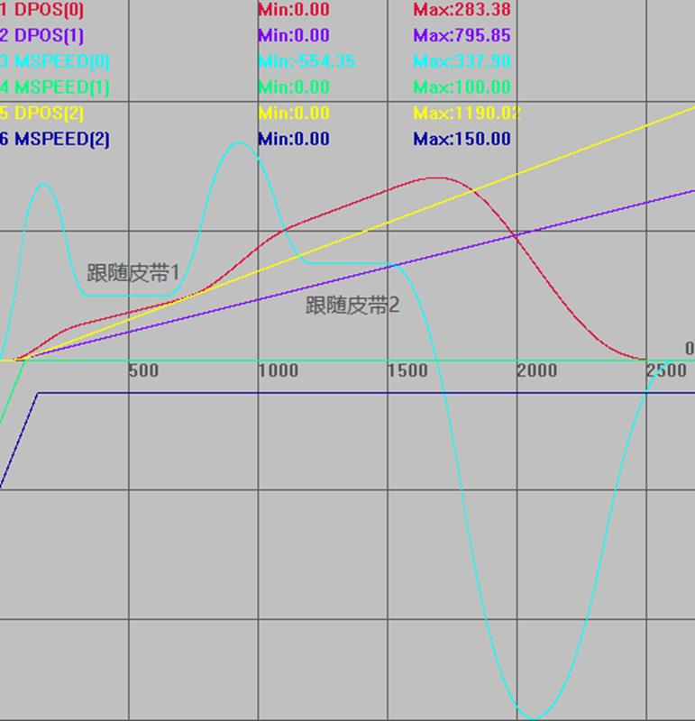
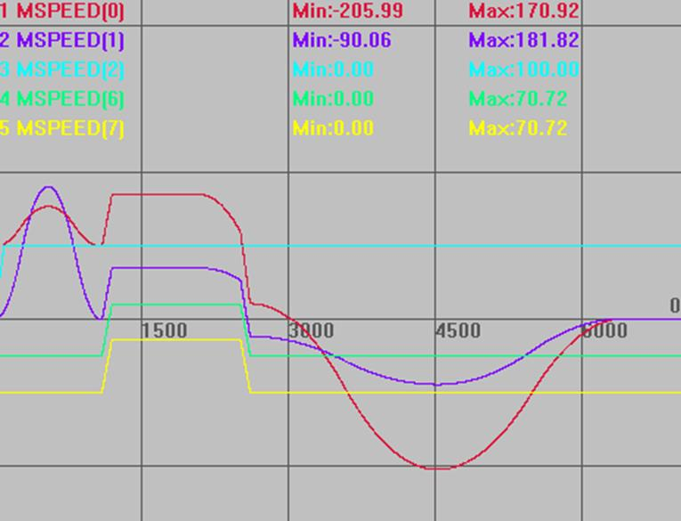

|
类型 |
运动设置指令 | ||||||||||||
|
描述 |
同步运动，皮带上物体跟随，此运动非插补运动，不保证运动轨迹为直线。
要求皮带轴与BASE跟随轴的长度单位是一样的。 当BASE轴完成跟随动作后，此指令结束。
MOVESYNC支持连续使用，会自动保证速度连续，中间可以插入MOVE_OP指令，为了避免运动结束时高速跟随中直接停止，最后一条MOVESYNC请使用-1模式。 此指令属于凸轮指令，不支持运动暂停。使用时需要将角度转换为弧度（0~2PI）。 注：多个movesync运动中不能插入插补运动或者关节运动，只能通过轴叠加的方式修改运动轨迹，否则会导致速度不连续或者飞车 | ||||||||||||
|
语法 |
MOVESYNC(mode,synctime,syncposition,syncaxis,pos1[,pos2, pos3…]) mode：模式
mode=0+angle，angle：皮带旋转角度，角度=皮带轴dpos正向与BASE轴正向的夹角。使用时需要将角度转换为弧度（0~2PI），例如机械手坐标系中，BASE(X轴)，Mode=PI/4，表示皮带dpos增加方向，往坐标系外运动，与X轴正向夹角为45度；BASE(X轴)，Mode=PI*5/4，表示皮带dpos增加方向，往坐标系外运动，与X轴正向夹角为225度；同理Mode=PI/2，皮带在坐标系y轴正方向；Mode=PI，皮带在坐标系x轴负方向；Mode=(PI*1.75)，皮带在315度的方向。如果选择的是Y轴与皮带轴的夹角，则考虑皮带dpos增加方向与Y轴正向夹角即可。 mode=1000+tableindex，几个轴的跟踪比例依次存储table里面，这样可以实现三维的皮带跟踪，当皮带有倾斜的时候(固件版本20180209增加此功能) synctime：同步时间，ms单位，本运动在指定时间内完成，完成时BASE轴跟上皮带且保持速度一致。0表示根据运动轴的速度加速度来估计同步时间，可能不准确 syncposition：皮带轴物体被感应到时皮带轴的位置，此指令支持皮带轴坐标循环，但是在指令被调用时确保此参数位置和当前皮带轴位置之间没有发生坐标修改或循环操作，因此此指令调用时不要在坐标循环点附近 syncaxis：皮带轴轴号，-1表示没有皮带轴，直接运动到pos1的位置 pos1：皮带轴物体被感应到时的BASE第1个轴绝对位置 posn：皮带轴物体被感应到时的BASE第n个轴绝对位置  | ||||||||||||
|
适用控制器 |
ECI241x、ECI282x、ECI382x、XPLC全系列、ZMC3系列以上 | ||||||||||||
|
例子 |
例一： GLOBAL tmp_val GLOBAL tmp_offPos GLOBAL tmp_AccPos tmp_flag=0
SPEED(0)=800 DPOS(0)=0 DPOS(1)=0 VMOVE(1)AXIS(0)
wait UNTIL tmp_flag=1
tmp_offPos=100 tmp_AccPos=800*0.4/2 tmp_val=Mpos(0)+tmp_offPos+tmp_AccPos ?tmp_val TRIGGER base(1) MOVE_WAIT(mpos,0,1,tmp_val-tmp_AccPos)axis(1) MOVESYNC(0,400,tmp_val,0,0)AXIS(1) '加速段 MOVESYNC(0,1000,tmp_val,0,0)AXIS(1) '匀速段 MOVESYNC(-1,400,tmp_val,-1,800)AXIS(1) '减速段
End
运动轨迹和速度曲线 DPOS(0)垂直刻度3000，无偏移 DPOS(1)垂直刻度500，偏移-100 MSPEED(0)垂直刻度500，无偏移 MSPEED(1)垂直刻度500，偏移100 
例二：皮带取料 RAPIDSTOP(2) WAIT IDLE(0) WAIT IDLE(1) BASE(0,1) DPOS=0,0 UNITS=100,100 ATYPE=1,1 SPEED=100,100 ACCEL=1000,1000 DECEL=1000,1000 TRIGGER MOVESYNC(0, 0, 100, 1, 120) '同步到皮带物体上 MOVE_OP(1,1) '下降, 如果Z轴下降,可以用MOVESYNC运动指令代替 MOVE_OP(0,1) '开吸嘴 MOVESYNC(0, 1000, 100, 1, 120 ) '继续同步1s MOVE_OP(1,0) '上升 MOVESYNC(-1, 0, 0, -1, 400) '走到放料位置400处 MOVE_OP(1,1) '下降 MOVE_OP(0,0) '关吸嘴 MOVE_DELAY(2) '延时2ms, MOVESYNC连续运动中不能插入此类语句 MOVE_OP(1,0) '上升 MOVEABS(0) '回到原点 VMOVE(1) AXIS(1) '皮带轴运动
运动轨迹和速度曲线 DPOS(0)垂直刻度500，无偏移 DPOS(1)垂直刻度500，无偏移 MSPEED(0)垂直刻度200，无偏移 MSPEED(1)垂直刻度200，无偏移 
例三：皮带取料，放另外的皮带上 RAPIDSTOP(2) WAIT IDLE(0) WAIT IDLE(1) BASE(0,1,2) DPOS=0,0,0 UNITS=100,100,100 ATYPE=1,1,1 SPEED=1000,100,150 '设置不同速度 ACCEL=1000,1000,1000 DECEL=1000,1000,1000 TRIGGER MOVESYNC(0, 0, 50, 1, 80 ) '同步到皮带物体上 MOVE_OP(0,1) '开吸嘴 MOVE_OP(1,1) '下降,如果Z轴下降,可以用movesync运动指令代替 MOVESYNC(0, 300, 50, 1, 80 ) '继续同步2ms MOVE_OP(1,0) '上升 MOVESYNC(0, 0, 100, 2, 150) '走到第二个皮带上对应位置 MOVE_OP(1,1) '下降 MOVE_OP(0,0) '关吸嘴 MOVESYNC(0,300, 100, 2, 150) '同步2ms MOVE_OP(1,0) '上升 MOVESYNC(-1, 0, 0, -1, 0) '走到停止位置 VMOVE(1) AXIS(1) '皮带轴1运动 VMOVE(1) AXIS(2) '皮带轴2运动
运动轨迹和速度曲线 DPOS(0)垂直刻度200，无偏移 DPOS(1)垂直刻度200，无偏移 MSPEED(0)垂直刻度200，无偏移 MSPEED(1)垂直刻度200，偏移-200 DPOS(2)垂直刻度200，无偏移 MSPEED(2)垂直刻度200，偏移-200 
例四：SCARA机械手MOVESYNC同步运动例子见机械手使用movesync指令
例五：皮带物体上雕刻 RAPIDSTOP(2) WAIT IDLE(0) WAIT IDLE(1) BASE(0,1,2,6,7) UNITS=100,100,100,100,100 DPOS=0,0,0,0,0 SPEED=100,100,100,100,100 ACCEL=1000,1000,1000,1000,1000 DECEL=1000,1000,1000,1000,1000 TRIGGER ADDAX(6) AXIS(0) '在虚拟轴上雕刻,叠加到实际轴上 ADDAX(7) AXIS(1) BASE(0, 1) MOVESYNC(0, 0, 50, 2, 80 ,100) '同步到皮带物体上 MOVE_TASK(1, task1) '触发叠加轴雕刻 MOVESYNC(0, 1000, 50, 2, 80 ,100) '较长雕刻运动时间 MOVESYNC(-1, 0, 0, -1, 0 ,0) '走到停止位置 VMOVE(1) AXIS(2) '皮带轴运动 END
TASK1: DELAY (2) '叠加雕刻过程中绝对运动指令位置会不准,延时避开指令调用 BASE(6, 7) MOVE(100,100) '雕刻，双面划线 WAIT IDLE '等待雕刻结束 BASE(0, 1) MOVESYNC(-2, 0, 0, -1, 0 ,0) '雕刻结束强制走到停止位置
运动轨迹和速度曲线 MSPEED(0)垂直刻度200，无偏移 MSPEED(1)垂直刻度200，无偏移 MSPEED(2)垂直刻度200，无偏移 MSPEED（6）竖直刻度200，偏移-50 MSPEED（7）竖直刻度200，偏移-100  |